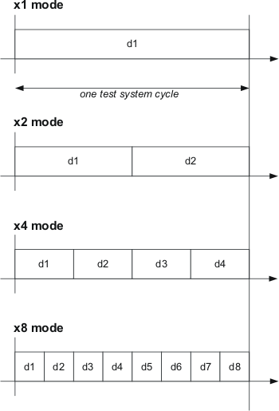

Introducing x-modes
X-mode refers to set up processes that can be used to fit multiple device cycles into a single test system cycle. Using x-mode, you can achieve different speeds on one I/O pin. The "x" implies multiplication. ("x4 mode" means that there are four device cycles per tester cycle.)
The purpose of x-modes is to run tests faster and use memory more efficiently. The memory test patterns can be executed at up to 3.6 Gbps on V93000 testers. The testers support x1, x2, x3, x4, x6, and x8 modes. This graphic illustrates the x1, x2, x4, and x8 modes:

If the test system cycles occur at intervals of 8 ns, the device cycles will be 2 ns each in x4 mode and 1 ns in x8 mode.